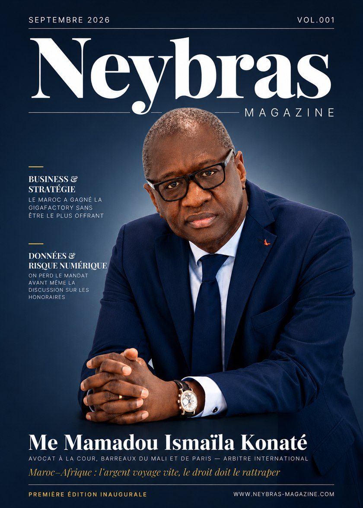

Dernier numéro · Vol. 001 · Septembre 2026
Maroc–Afrique : l'argent voyage vite, le droit doit le rattraper
En couverture, Me Mamadou Ismaïla Konaté, avocat à la Cour aux barreaux du Mali et de Paris, arbitre international, ancien ministre de la Justice du Mali.
- 24 pages
- Trimestriel
- Diffusion nominative contrôlée
Pourquoi lire ce numéro
Ce numéro analyse les transformations qui redessinent l'environnement de l'investissement au Maroc : charte de l'investissement, PPP et arbitrage, prudentiel bancaire, fiscalité du sport, IA et conformité, et relations juridiques avec l'Afrique francophone.
Cinq sujets à ne pas manquer
- InvestissementCharte, primes, dossier CRI
- PPP & ArbitrageClause écrite en dernier
- FinanceÉchéance prudentielle 2027
- FiscalitéClubs en sociétés sportives
- Maroc–AfriqueCirculation des actes
L'édito — « Un rendez-vous utile »
Dalal FahmiDirectrice de la publication
Trente pour cent d'aide à l'investissement. Une échéance prudentielle en 2027. Un verrou fiscal levé sur le sport professionnel. Ces annonces ont circulé. Presque aucune n'a été lue jusqu'au point où elle devient une décision : quel seuil franchir, quelle trésorerie mobiliser, quelle clause écrire avant de signer.
Les textes existent, ils sont publics, et ils restent illisibles au moment précis où il faudrait s'en servir. Neybras Magazine se propose de combler cet écart — non en résumant l'actualité, mais en donnant la parole à ceux qui la fabriquent : avocats, dirigeants, experts en gouvernance, régulateurs.
Un magazine ne se lance pas par hasard, et il ne se lance jamais au bon moment — il se lance quand le sujet ne peut plus attendre. C'est le cas ici.
Sommaire du Vol. 001
- Édito · Dalal FahmiUn rendez-vous utile03
- Me Mamadou Ismaïla KonatéMaroc–Afrique : l'argent voyage vite, le droit doit le rattraper06
- Par Houda HachamiTrente pour cent, mais pas pour tout le monde08
- Par Haitam DehhakGigafactory : le Maroc n'était pas le plus offrant10
- Me Driss El HartiArbitrer avant de construire12
- Pr. Khalid Cherkaoui SemmouniMarché résilié : tout se joue dans les dix jours14
- Par Tahar LouazziCompte à rebours prudentiel des banques marocaines16
- Me Amine LahlouLe verrou n'était pas sportif18
- Youssef El AmraniL'IA est déjà dans vos dossiers20
- Par Haitam DehhakL'IA ne restitue pas le droit qu'elle n'a jamais lu22
Les contributeurs de ce numéro
- Me Mamadou Ismaïla KonatéAvocat à la Cour, inscrit aux barreaux du Mali et de Paris, arbitre international. Membre de la Cour d'Arbitrage de Casablanca depuis sa création. Ancien Garde des Sceaux, ministre de la Justice du Mali.
- Me Driss El HartiAvocat au barreau de Tanger. Spécialiste en arbitrage international.
- Pr. Khalid Cherkaoui SemmouniProfesseur universitaire de droit public. Head of Legal & HR. Spécialiste des contrats d'affaires.
- Me Amine LahlouAvocat au barreau de Casablanca. Droit du sport et arbitrage international.
- Youssef El AmraniResponsable de la sécurité des systèmes d'information (RSSI / CISO). Expert gouvernance, risque et conformité.
- La rédactionHouda Hachami, Haitam Dehhak et Tahar Louazzi, sous la direction de Salma Aittajer, rédactrice en chef.
Diffusion — Vol. 001 · Septembre 2026
Tirage 1 000 exemplaires, un par destinataire
La revue n'est ni vendue au numéro, ni diffusée en kiosque, ni accessible par abonnement. Elle est adressée nominativement et gratuitement à une liste institutionnelle qualifiée, dans la limite d'une dotation par destinataire.
« Aucun ne reçoit la revue par hasard. »
- Cabinets d'avocats et de conseil
- 33,7 %
- Directions juridiques et financières d'entreprises
- 21,5 %
- Institutions publiques et régulateurs
- 20,5 %
- Banques et institutions financières
- 13,3 %
- Autres
- 11 %
Demander un exemplaire
Les numéros
-
Vol. 001 · Septembre 2026
Maroc–Afrique : l'argent voyage vite, le droit doit le rattraper
- Le Vol. 002 paraîtra en décembre 2026. Son sommaire est arrêté par la rédaction, numéro par numéro.